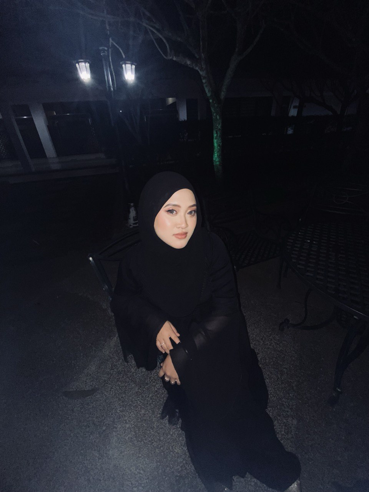

“ASPIRING DATA ANALYST | PASSIONATE ABOUT PROBLEM-SOLVING”
💗Welcome to my personal webpage💗

About Me🎀
Hi, I'm Nurin Nazihah binti Nor Sham. I am 24 years old, a Software Designer with a strong foundation in Linguistic IT.
I have a deep passion for creating digital solutions that are not only functional and user-friendly, but also sensitive to language and communication needs.
My work blends creativity with technical precision, using tools like Figma for UI/UX design, along with programming languages such as Python and JavaScript to bring ideas to life.
I also have experience in natural language processing (NLP), allowing me to design software that better understands and responds to human language.
I'm driven by the goal of developing inclusive, innovative technologies that connect people and enhance everyday interactions.
Education🎓
Bachelor of Linguistics and Information Technology, Universiti Utara Malaysia (2022-2025)
High School at Sekolah Menengah Kebangsaan Paduka Tuan, Segamat Johor (2015-2017)
High School at Sekolah Menengah Dato Bentara Dalam, Segamat Johor (2018-2021)
Continued Form 6 in Science Social for 1 year and a half
Soft Skills🎯
Communication skills
Multilingual
Creative thinking
Adaptability skills
Problem-solving
Leadership
Teamwork
Goals🏆
As a passionate Software Designer with a background in Linguistic IT, I am always striving to grow both personally and professionally.
Here are the goals that guide my journey:
Short-Term (1-2 Years):
Improve skills in React, Python, and natural language processing (NLP).
Build a portfolio with diverse projects that combine design and linguistics.
Contribute to open-source or collaborative projects focused on accessibility.
Mid-Term (3-5 Years):
Take a leadership role in UI/UX design or product development.
Launch my own language-focused application for better communication.
Earn certifications in UX research or AI for language technology.
Long-Term (5+ Years):
Become a recognized leader in tech-linguistics.
Lead a team to create global, inclusive communication tools.
Start my own venture in language-driven digital tools.
Experience💼
Software Designer & Linguistic IT Specialist
Freelance / Academic Projects | 2022 - Present
▸ Key Roles & Projects
Developed a language-aware mobile app using Figma, Python, and Flutter to support multilingual communication.
Designed a UI/UX interface for a multilingual learning platform, improving user flow by 30% through usability testing.
Contributed as a research assistant in linguistic annotation projects focusing on Malay auxiliary verbs.
Presented research findings in academic seminars, connecting linguistic theory with software solutions.
▸Key Achievement🏅
Built a project portfolio integrating software design with linguistic analysis
Gained hand-on experience with tools like Figma, Phyton, spaCy and NLTK
Recognized for innovative thinking, user-centered design and strong analytical skills